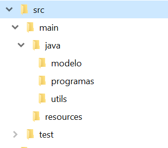

Paso 1: Crear un Proyecto Maven en Eclipse
Abre Eclipse y ve a File (Archivo) -> New (Nuevo) -> Project (Proyecto).
Selecciona Maven -> Maven Project y haz clic en Next.
Marca la opción Create a simple project (Crear un proyecto simple) y haz clic en Next.
Ingresa el Group Id (ID del Grupo) y el Artifact Id (ID del Artefacto) para tu proyecto Maven. Luego, haz clic en Finish.
Paso 2: Agregar Dependencias de Hibernate en el archivo pom.xml
En el archivo pom.xml del proyecto Maven, agrega las dependencias de Hibernate. Asegúrate de incluir las dependencias necesarias para Hibernate Core, así como cualquier las del driver de la base de datos que se vaya a utilizar En el ejemplo que se os proporciona:
<dependency>
<groupId>com.oracle.database.jdbc</groupId>
<artifactId>ojdbc10</artifactId>
<version>19.12.0.0</version>
</dependency>
<dependency>
<groupId>org.hibernate</groupId>
<artifactId>hibernate-testing</artifactId>
<version>5.4.33.Final</version>
</dependency>
Paso 3: Configurar Archivo de Configuración de Hibernate
Crea el archivo hibernate.cfg.xml donde configurarás la conexión a la base de datos. Puedes colocarlo en la carpeta src/main/resources del proyecto Maven.
Define las propiedades de conexión a la base de datos en este archivo. En el ejemplo que se os proporciona:
<?xml version="1.0" encoding="UTF-8"?>
<!DOCTYPE hibernate-configuration PUBLIC
"-//Hibernate/Hibernate Configuration DTD 3.0//EN"
"http://www.hibernate.org/dtd/hibernate-configuration-3.0.dtd">
<hibernate-configuration>
<session-factory>
<property name="hibernate.connection.driver_class">oracle.jdbc.driver.OracleDriver</property>
<property name="hibernate.connection.password">tiger</property>
<property name="hibernate.connection.url">jdbc:oracle:thin:@localhost:1521/xe</property>
<property name="hibernate.connection.username">scott</property>
<property name="hibernate.dialect">org.hibernate.dialect.Oracle10gDialect</property>
</session-factory>
</hibernate-configuration>
Paso 4: Crear Entidades
Crea las clases de entidad utilizando anotaciones de Hibernate En el ejemplo que se os proporciona:
@Entity
@Table
public class Usuario implements Serializable {
@Id
@Column
private int seq;
@Column
private String userNombre;
@Column
private String password;
@Column
private Date creacionFecha;
@Column
private String creacionUsuario;
@Column
private Date modificaFecha;
@Column
private String modificaUsuario;
Paso 5: Crea paquetes para organizar proyecto

La estructura de ficheros la determina Maven.
En modelo situamos las clases entidad
En programas tendremos los programas.
En utils la clase que genera objetos de la clase SessionFactory
Paso 6: Crear la session
En el paquete utils creamos la utilidad para gestionar la sesión de Hibernate mediante un patrón Singleton, lo que asegura que se utiliza una única instancia de SessionFactory en toda la aplicación.
La clase de utilidad llamada HibernateUtils se diseña para gestionar la conexión con Hibernate mediante el patrón Singleton. Este patrón garantiza que se utilice una única instancia de SessionFactory en toda la aplicación, optimizando el uso de recursos, ya que SessionFactory es un objeto pesado cuya creación puede ser costosa. La instancia de SessionFactory se inicializa de forma segura en un bloque estático, leyendo la configuración desde el archivo hibernate.cfg.xml. El método estático getSessionFactory permite acceder a esta instancia de manera centralizada, facilitando su reutilización en cualquier parte de la aplicación, asegurando además que se maneje de forma eficiente
|
Clase HibernateUtils (utiliza un patron Singleton)
private static SessionFactory sessionFactory;
Es un método static, lo que significa que puedes llamarlo directamente usando la clase, sin necesidad de crear una instancia de HibernateUtils. Retorna la instancia única de SessionFactory. Centraliza la configuración de Hibernate en un único lugar (hibernate.cfg.xml y esta clase). |
Paso 7: En el paquete "programas" creamos la clase que tiene un método main:
En conveniente al finalizar este punto, ejecutar el programa para ver que la parte de la conexión se ha realizado correctamente
public class Main {
public static void main(String[] args) {
SessionFactory sesion = HibernateUtils.getSessionFactory();
Session session = sesion.openSession(); // TODO Auto-generated constructor stub
try {
//aquí pondremos el programa, transacciones, instanciar objetos, guardar, recuperar, etc..
} catch (Exception e) {
e.printStackTrace();
// acciones para restaurar el estado bd( rollback)
}finally {
session.close();
}
}
}
Paso 8: Completamos el fichero hibernate.cfg.xml:
incluimos las clases entidad. En el ejemplo que se os proporciona:
<mapping class="modelo.Usuario"></mapping>
Especificamos la forma en que deseamos interactuar con la base de datos:
<property name="hibernate.hbm2ddl.auto">create</property>
Especificamos otras propiedades:
<property name="show_sql">true</property>
Paso 9: Completamos el el programa. En el ejemplo que se os proporciona:
Instanciamos un objeto de la clase Entidad y lo hacemos persistente:
import java.util.Date;
import org.hibernate.Session;import org.hibernate.HibernateException;import org.hibernate.SessionFactory;
import maven.MySQL.Usuario;import utils.HibernateUtils;
public class Main { public static void main(String[] args) {
SessionFactory sesion = HibernateUtils.getSessionFactory(); Session session = sesion.openSession(); // TODO Auto-generated constructor stub Usuario p = new Usuario(); p.setSeq(1); p.setCreacionUsuario("Manolo"); p.setCreacionFecha(new Date()); p.setPassword("Manolo"); try {
session.beginTransaction();
session.save(p); session.getTransaction().commit();
}catch (HibernateException e) {
if(session.getTransaction()!=null) { session.getTransaction().rollback(); } }finally {
session.close();
}
}
}
Ejecuta tu aplicación desde Eclipse y prueba el código de Hibernate que has escrito para asegurarte de que interactúe correctamente con la base de datos.
Paso 10: Comprobamos que se ha creado una tabla con las mismas columnas que atributos anotados tiene la clase entidad y que se haya insertado la línea correspondiente al objeto que se ha hecho persistente: